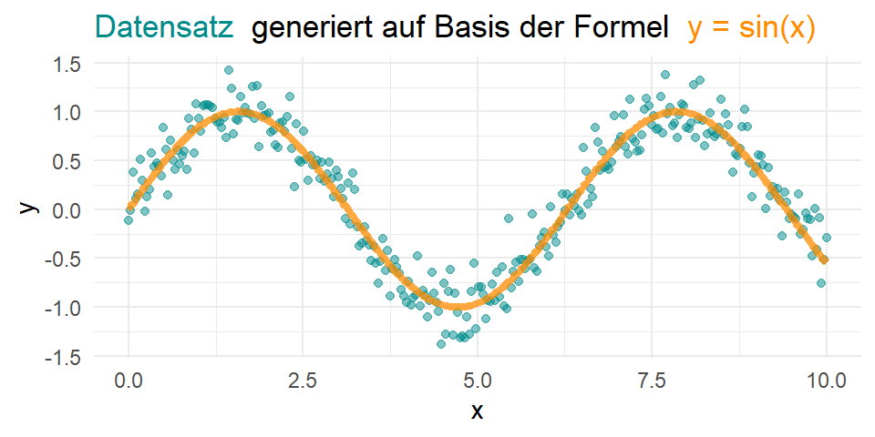
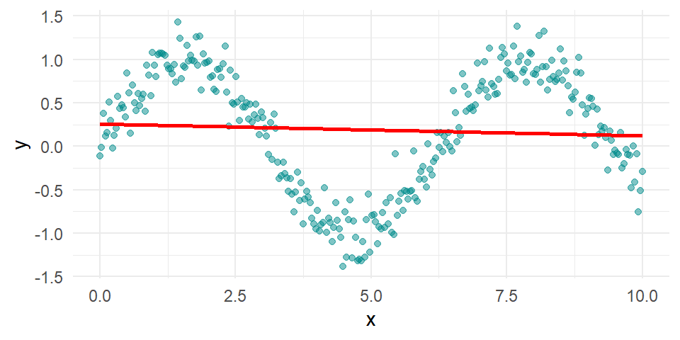
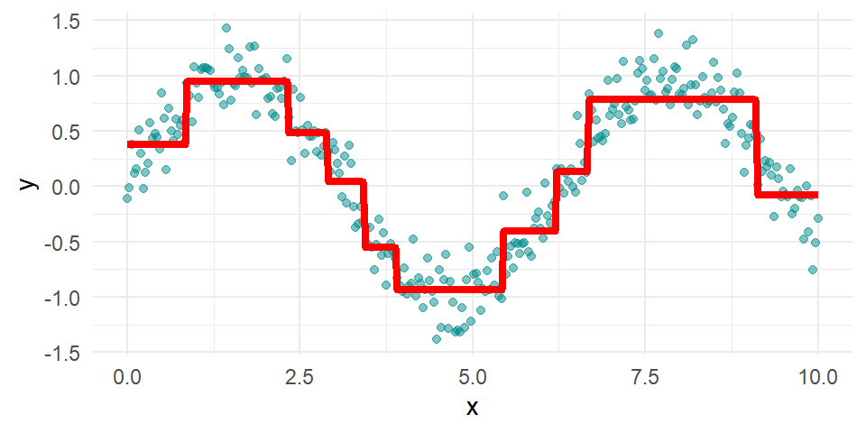
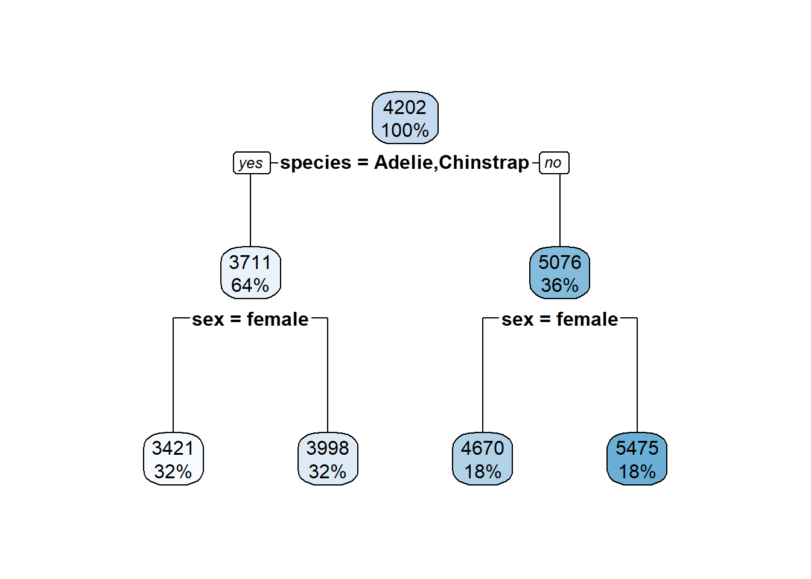
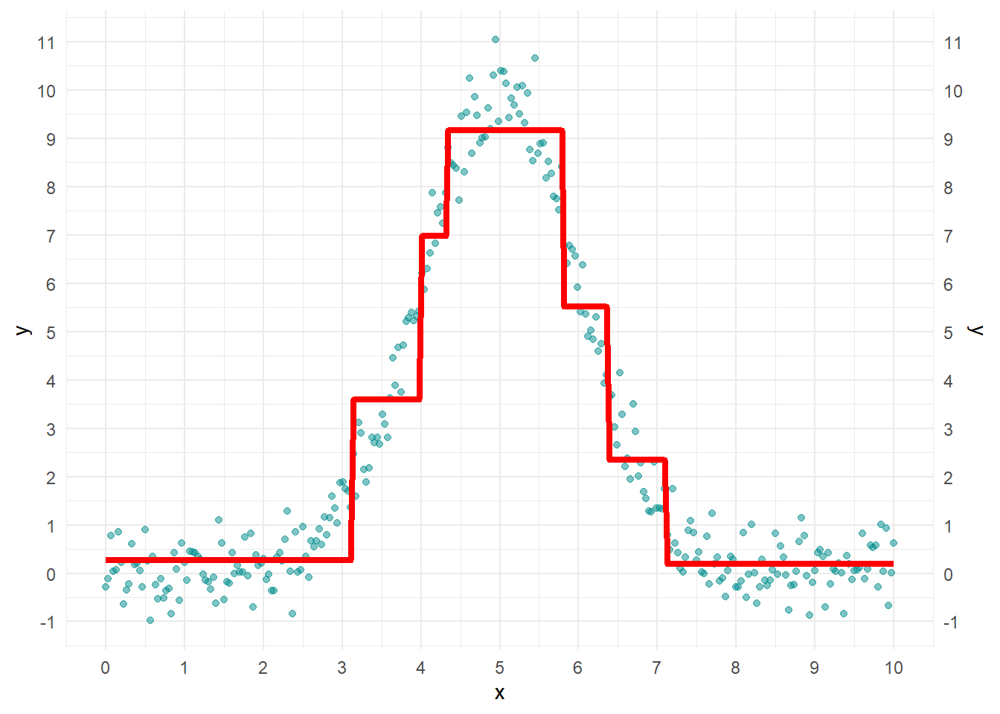
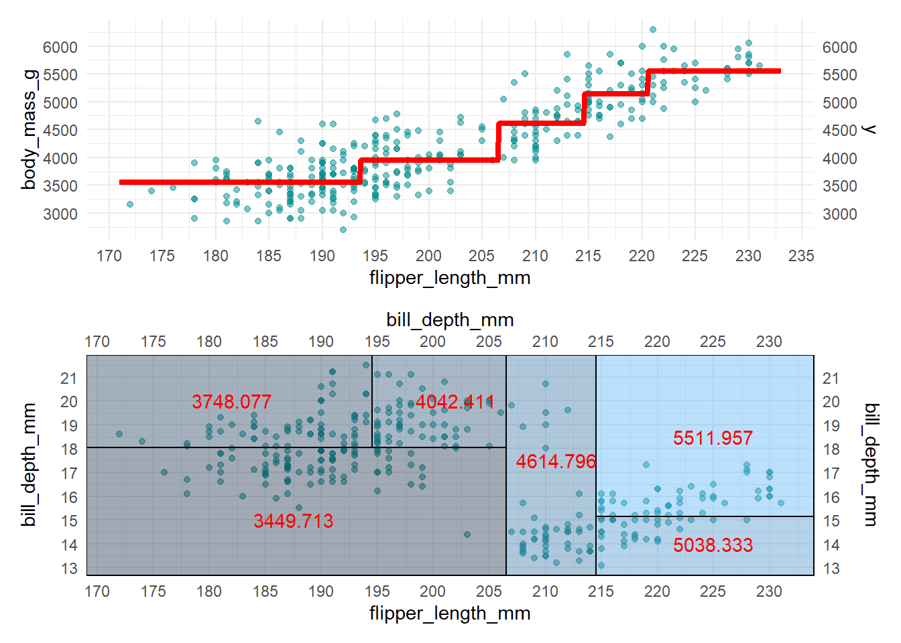
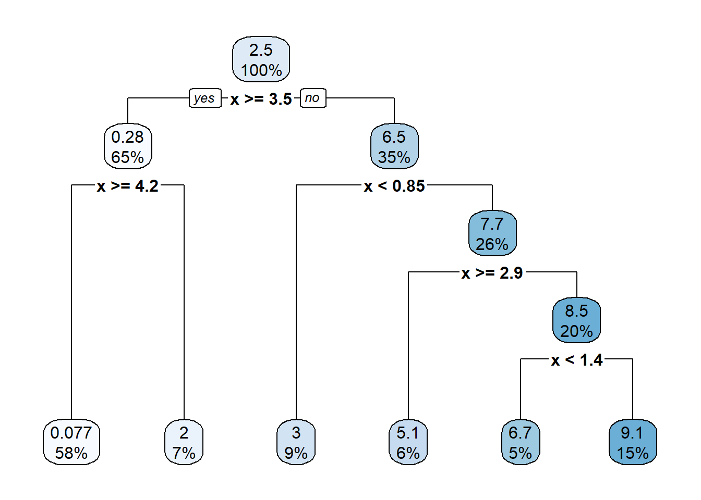
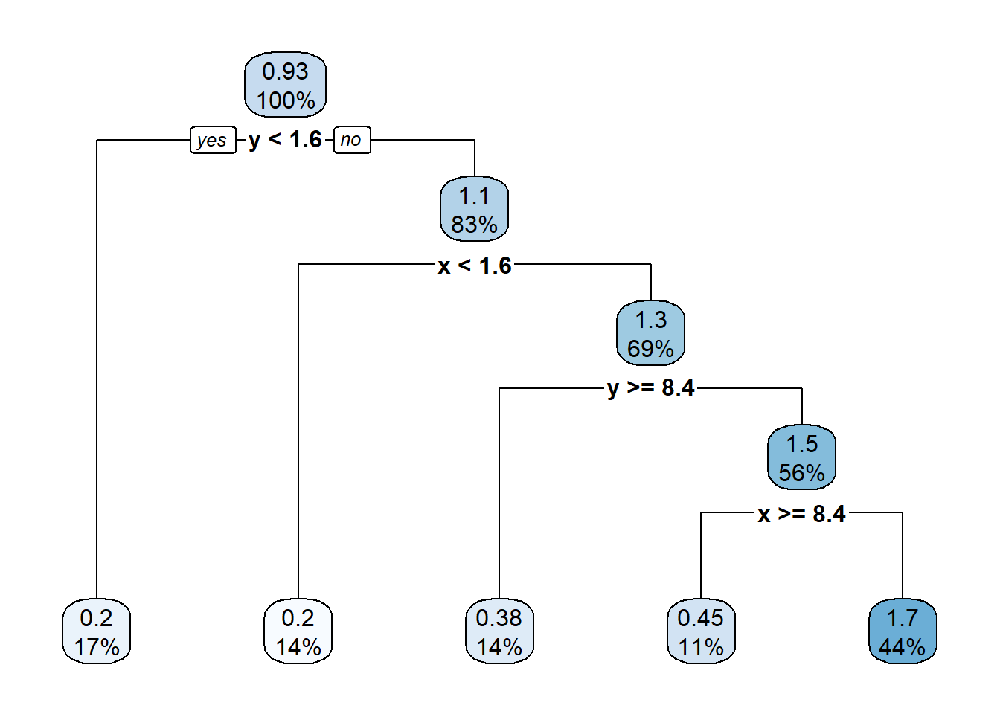

4 Regressionsbäume
In diesem Kapitel setzen wir uns mit Baummodellen in einem Regressionskontext auseinander. Baummodelle bilden die Grundlage für viele weitere Modelle, welche aufgrund ihrer Fähigkeit Zusammenhänge sehr gut zu modellieren oft genurzr weren. Mit einer dieser Erweiterungen setzen wir uns in Section 4.5 auseinander.
Der Hauprfokus dieses Kapitels liegt allerdings darauf, die Grundidee des Modells und des Algorithmus zu verstehen der für das Schätzen von Regressionsbäumen verwendet wird.
4.1 Grundidee
Regressionsbäume sind Teil der Classification and Regression Tree (CART) Familie. Regressions und Klassifikationsbäume werden auch Entscheidungsbäume genannt, da die Vorhersagen durch (binär: ‘Ja’/‘Nein’) Entscheidungen berechnet werden.
4.1.1 Darstellung von Bäumen und Vorhersagen
In diesem Unterkapitel diskutieren wir zwei Möglichkeiten um Entscheidungsbäume darzustellen.
4.1.1.1 Baumdiagramme
Die grafischen Bestandteile bei der Darstellung eines Entscheidungsbaums als Baumdiagramm sind Knoten (nodes) und Kanten. Bei den Knoten unterscheiden wir vor allem zwischen dem Wurzelknoten (root node) und Blattknoten. Der Wurzelknkoten steht hierbei immer ganz oben im Diagramm und die Blattknoten am Ende der jeweiligen Entscheidungspfade. Knoten welche zwischen dem Wurzel und den Blattknoten stehen nennen wir auch Entscheidungsknoten. (Beachte, dass auch der Wurzelknoten ein Entscheidungsknoten ist!) In einem Entscheidungsknoten prüfen wir eine aufgestellte Bedingung und bewegen uns auf Basis der Entscheidung entsprechend entlang der Kanten. Bei numerischen Features ist sind die Bedingungen in Form eines Größenvergleichs gegeben. Es wird also überprüft, ob das Feature eines Datenpunktes größer(-gleich) oder kleiner als ein Schwellenwert ist. Ähnlich wie beim Dummy-Encoding bei einer linearen Regression wird bei nominalen Merkmalen lediglich geprüft, ob die Ausprägung der Variable mit dem Entscheidungswert übereinstimmt oder nicht. Diesen Vorgang wiederholen wir bis ein Blattknoten erreicht wird, in welchem die Vorhersagen stehen.
Folgende Grafik zeigt eine Beispielhafte Darstellung eines solchen Entscheidungsbaums.

Das in Figure 4.1 dargestellte Baumdiagramm wurde auf Basis eines Datensatzes erzeugt, welcher die beiden Variablen \(X_1\) und \(X_2\) enthält. In jedem Entscheidungsknoten wird das Entscheidungskriterium durch einen Sehwellenwert (Splittingpoint) \(t_i,i=1,...,6\) ausgedrückt. Falls in einem binären Entscheidungsbaum also \(6\) Splittingpoints gegeben sind, dann existieren \(6+1 = 7\) Blattknoten. Da der oberste Knoten (Wurzeknoten) auch ein Entscheidungsknoten ist, hat dieser teilweise die gleiche Farbe wie die anderen Entscheidungsknoten, ist aufgrund seiner Wurzeleigenschaft aber nochmal gesondert zu betrachten.
Wir prüfen also im ersten Schritt ob die Variable \(X_2\) kleiner oder gleich \(t_1\) ist. Falls das der Fall ist, bewegen wir uns entlang der linken Kante und ansonsten entlang der rechten Kante zum nächsten Entscheidungsknoten. Angenommen \(X_2\leq t_1\), dann bewegen wir uns zum nächsten Knoten in welchem wir die Bedingung \(X_1\leq t_2\) prüfen. Falls diese Bedingung ebenso erfüllt ist, landen wir im Blattknoten mit dem Wert \(R_1\). Der Wert \(R_1\) ist dann die vorhersage für den entsprechenden Datenpunkt. Wie die Werte \(R_k, k=1,...,6\) berechnet werden untersuchen wir in Section 4.2.
4.1.1.2 Aufteilung des Featurespace
Äquivalent zur Darstellung eines Diagramms können wir, zumindest bei ein- oder zweidimensionalen Datensätzen, einen Entscheidungsbaum auch im Featurespace darstellen. Mit Featurespace meinen wir hier den Raum, welcher durch die Ausprägungen aufgespannt wird. Existieren wie in Figure 4.1 zum Beispiel zwei Feature \(X_1\) und \(X_2\), dann können wir die Splittingpoints und Blattknoten in einem Kooerdinatensystem darstellen:

Beachte dass die Darstellungen in Figure 4.1 und Figure 4.2 äquivalent sind. Wir können also jeweils die eine Darstellung in die andere überführen. Um beispielsweise in den Blattknoten \(R_6\) aus Figure 4.1 zu erreichen müssen wir in Figure 4.2 die gleichen Bedingungen prüfen:
- \(X_2\leq t_1\) ist bei \(R_6\) nicht erfüllt und deshalb \(X_2>t_1\). Wir befinden uns also oberhalb der horizontalen Linie durch den Punkt \(t_1\).
- \(X_1\leq t_4\) ist bei \(R_6\) ebenso nicht erfüllt, weshalb \(X_1>t_4\) gilt.
- \(X_1\leq t_5\) ist bei \(R_6\) ebenso nicht erfüllt, weshalb \(X_1>t_5\) gilt.
- \(X_2\leq t_6\) ist bei \(R_6\) ebesno nicht erfüllt, weshalb \(X_2>t_6\) gilt.
Zusammengefasst muss für ein Datenpunkt \((x_1,x_2)\) also \(x_2>t_6\) und \(x_1>t_5\) gelten, damit der Datenpunkt in den Blattknoten \(R_6\) fällt.
4.1.2 Vorteile gegenüber linearen Modellen
Bäume gehören aufgrund ihrer Struktur zu nichtlinearen Modellen. Falls die unterliegenden Daten also nicht der Linearitätsannahme unterliegen, können wir also bei einem guten Baum erwarten, dass dieser die Zusammenhänge in den Daten besser beschreibt.
Betrachte hierfür folgendes syntetisches Beispiel, welches diesen Effekt illustriert:
Beispiel 4.1 Der Datensatz data_exm besteht aus zwei Spalten x und y, wobei x Werte zwischen \(0\) und \(10\) annimmt und \(y\) durch die Formel \[y = f(x)+\varepsilon=\sin(x)+\varepsilon \]
(mit \(\varepsilon \sim \mathcal{N}(0,1)\)) berechnet wird. y soll hierbei die abhängige und x die unabhängige Variable darstellen und das Ziel ist deshalb y durch x zu approximieren.
Die folgende Grafik zeigt eine Realisation dieser Simulation:
Falls wir nun versuchen den Zusammenhang zwischen y und x mithilfe eines einfachen linearen Modells zu modellieren, so erhalten wir die Regressionsgerade welche in der folgenden Grafik dargestellt ist.

Offensichtlich eignet sich die einfache lineare Regression nicht um den Zusammenhang zwischen y und x zu modellieren. Wir können allerdings den Zusammenhang ebenso durch einen Regressionsbaum modellieren, welcher im Featurespace wie folgt dargestellt werden kann.

Beachte, dass unser Featurespace in diesem Beispiel nur eindimensional ist, weshalb das resultierende Baummodell keine Flächen (wie in Figure 4.2), sondern Geraden enthält. Die rote Linie beschreibt hierbei die durch das Baummodell geschätzten Werte \(\hat{y}\) für ein gegebenes \(x\). Das Baummodell modelliert den Einfluss von x auf y also vergleichsweise gut, obwohl die Daten keinen linearen Zusammenhang besitzen!
Zusammengefasst spiegelt sich der erste Vorteil von Baummodellen gegenüber linearen Modellen also in der Fähigkeit wieder auch nichtlineare Zusammenhänge zu modellieren.
Einen weiteren Vorteil können wir bei der Betrachtung von Figure 4.1 erkennen: Bei Baummodellen ist sehr leicht erkennbar, auf Basis welcher Variablen und Schwellenwerten die Vorhersagen getroffen werden. Selbst wenn das Modell aus einer Vielzahl von Variablen besteht kann man durch die Darstellung eines Baumdiagramms effizient den Wert berechnen, welcher durch das Modell vorhergesagt wird.
4.2 Top-Down-Greedy
Bisher haben wir zwar verschiedene Darstellung der Regressionsbäume betrachtet und herausgefunden wie wir bei den verschiedenen Darstellungen Vorhersagewerte ablesen können, allerdings nicht wie die Schwellwerte und Splittingvariablen bestimmt werden.
Der Algorithmus welcher hierfür verwendet wird ist der sogenannte Top-Down-Greedy oder Recursive-Binary-Splitting Algorithmus. Um den Algorithmus zu erklären orientieren wir uns primär an der Darstellung aus Figure 4.1.
Die Idee des Algorithmus ist, dass wir in jedem Schritt den Feature Space bestmöglich zweiteilen um eine verbesserte Vorhersage im Vergleich zur ungeteilten Version erhalten. Formal lässt sich der Algorithmus wie folgt darstellen:
Initialisierung:
Beginne mit dem gesamten Trainingsdatensatz \[D = \{(x_k,y_k):x_k\in\mathbb{R}^J,\: y_k\in\mathbb{R},\: k = 1,...,K\}\] in der Wurzel des Baums.Spaltensuche :
Für jedes Feature \(X_j\) und jeden potenziellen1 Schwellenwert \(s\):Teile die Daten in zwei Regionen: \[\begin{align*} R_1(j, s) &= \{ x \in D \mid x_j \leq s \}\\ R_2(j, s) &= \{ x \in D \mid x_j > s \} \end{align*}\]
Berechne den MSE, welcher durch diese Aufteilung entsteht:
\[\begin{equation*} \text{MSE}(j, s) = \frac{1}{|R_1|}\sum_{i: x_i \in R_1(j, s)} (y_i - \bar{y}_{R_1})^2 + \frac{1}{|R_2|}\sum_{i: x_i \in R_2(j, s)} (y_i - \bar{y}_{R_2})^2 \end{equation*}\]
wobei \(\bar{y}_{R_1}\) der durschnittliche Wert aller Datenpunkte \(y\) ist, welche in \(R_1\) liegen und \(\bar{y}_{R_2}\) der durschnittliche Wert aller Datenpunkte \(y\), welche in \(R_2\) liegen.
Wahl des besten Schwellenwerts :
Wähle das Paar \((j^{*},s^{*})\), welches den MSE minimiert.Rekursives Aufteilen:
- Erzeuge zwei neue Knoten für \(R_1(j^{*}, s^{*})\) und \(R_2(j^{*}, s^{*})\).
- Wiederhole Schritte 2–4 rekursiv für jeden dieser Knoten.
Stopkriterium prüfen:
Beende die Aufteilung, wenn eines der folgenden Kriterien erfüllt ist:- Die Region enthält weniger als eine vorher festgelegte Mindestanzahl an Beobachtungen.
- Eine vorher festgelegte maximale Baumtiefe wurde erreicht.
- Die Reduktion des Fehlers liegt unter einem vorher festgelegten Schwellenwert.
Terminalknoten-Wert setzen:
Weise jedem Blattknoten den Mittelwert der Zielvariablen \(\bar{y}_{R_i}\:,i=1,...,I\) der enthaltenen Datenpunkte zu.
4.2.1 Rekursive und Greedy Eigenschaft des Algorithmus
Der rekursvive Charakter des Algorithmus ist hierbei in Schritt 4. zu erkennen, da nach jedem Aufteilen des Datensatzes in zwei Teildatensätze diese Teildatensätze nach dem gleichen Prinzip wieder aufgeteilt werden.
Der greedy Charakter des Algorithmus ist in Schritt 3. wiederzufinden. Da wir in jeder Iteration jenen Split wählen, welcher den MSE in diesem Schritt minimiert ist gewährleistet, dass wir in jeder Iteration den bestmöglichen Split bilden. Dieses Vorgehen kann aber unter Umständen zu einem nicht optimalen Baum führen: Angnommen wir wollen eine Region \(R_i\) in zwei Teilregionen \(R_{i,1}\) und \(R_{i,2}\) aufteilen und wählen hierfür das optimale Paar \((j^*,s^*)\). Dann existiert keine weitere Kombination \((\tilde{j},\tilde{s})\), so dass \(\text{MSE}(\tilde{j}, \tilde{s})< \text{MSE}(j^*, s^*)\). Falls wir also \(R_i\) bezüglich dem Paar \((j^*, s^*)\) in \(R_{i,1}\) und \(R_{i,2}\) aufteilen und daraufhin \(R_{i,1}\) optimal in \(R_{i+1,1}\) und \(R_{i+1,2}\) aufteilen, dann kann es sein, dass unter der Verwendung von \((\tilde{j},\tilde{s})\) aus der letzten Iteration ein Split \(R_{\tilde{i}+1,1}\) und \(R_{\tilde{i}+1,2}\) entstehen hätte können, für den
\[\begin{equation*}
\text{MSE}_{\tilde{i}+1}(j, s) < \text{MSE}_{i+1}(j, s)
\end{equation*}\] gilt.
4.2.2 Stoppkriterien
Im 5. Schritt des Top-Down-Greedy Algorithmus haben wir veschiedene Kriterien genannt, welche zum Stoppen des Algorithmus führen können. Wir wollen in diesem Abschnitt die Stopp-Kriterien ein wenig genauer definieren und untersuchen.
4.2.2.1 Mindestanzahl an Beobachtungen min_n
Das Kriterium zur Mindestanzahl an Beobachtungen prüft vor jedem weiteren Aufteilen des Featurespace, ob in den durch das Aufteilen resultierenden Teildatensätzen eine Mindestanzahl an Beobachtungen liegt. Ziel dieses Kriteriums ist es zu vermeiden, dass sich das Baummodell zu stark an die Trainingsdaten anpasst. Die vorhersagen \(\hat{y}\) werden durch das Bilden des Durchschnitts in einer der Blattregionen \(R_i\) generiert:
\[ \frac{1}{|R_i|}\sum_{x_k\in R_i}y_k \] Falls also in \(R_i\) nur eine Observation vorhanden ist, kann das zu einer starken Verzerrung bei einer Evaluation mithilfe von Testdaten führen.
Wir bezeichnen nun mit min_n die Anzahl an Datenpunkten, welche mindestens in einem Teilgebiet liegen müssen so dass dieses geteilt wird. min_n muss also mindestens den Wert 2 besitzen. Nun stellt sich natürlich die Frage, welchen Wert wir für min_n beim Schätzen eines Regressionsbaumes festlegen sollen. Natürlich lässt sich diese Frage wie immer nicht eindeutig beantworten. Wir werden später sehen, dass R diesen Wert erstmal selbst bestimmt, wir diesen alternativ aber auch übergeben können. Im Rahmen dieser Verasntaltung geben wir uns aber damit zufrieden, welchen Wert R für optimal hält.
{kind=link}
4.2.2.2 Baumtiefe tree_depth
Der Parameter tree_depth kann ebenso zum Stoppen des Algorithmus führen: Damit der Baum nicht unkontrolliert wächst (bzw. an Tiefe gewinnt), stoppen wir den Algorithmus sobald der Baum eine bestimmte Tiefe besitzt. Nun müssen wir noch definieren, was mit tiefe überhaupt gemeint ist.
- Die Länge eines Pfades zwischen dem Wurzelknoten und einem beliebigen anderen Knoten \(K_n\) ist durch die Anzahl der Kanten definiert, an welchen wir entlang gehen müssen, um den Knoten \(K_i\) zu erreichen.
- Die Tiefe eines Baumes ist dann definiert durch den längsten Pfad vom Wurzelknoten zu einem anderen Knoten.
So hat der Baum in Figure 4.1 zum Beispiel die Tiefe 4, da wir entlang der rechten Seite des Baumes vier Kanten entlang gehen müssen, um entweder beim Konten mit dem Wert \(R_6\) oder \(R_7\) zu landen. Beachte: Der längste Pfad muss also nicht eindeutig sein!
4.2.2.3 Reduktion des Fehlers (cost_complexity)
Ein weiteres wichtiges Stoppkriterium ist das Stoppen durch fehlende Reduzierung des Fehlers. Betrachte hierfür folgenden Ausschnitt aus einem beliebigen Regressionsbaum:
Wir können für jeden der drei Knoten den MSE durch die Formel
\[ \text{MSE}_K = \frac{1}{|K|}\sum_{x_i\in K} (\bar{y}_K-\hat{y_i})^2 \] berechnen, wobei \(K\) für den entsprechenden Knoten \(K_{\text{Eltern}},K_{\text{Kind}_1},K_{\text{Kind}_2}\) steht.
Wir sind nun an der relativen Reduzierung des Fehlers durch den Split des Eltern Knotens in zwei Kind Knoten interessiert. Diese Änderung lässt sich mithilfe der \(\text{MSE}\) Terme durch folgende Formel beschreiben:
\[\begin{align}\label{eq:improvement} & \frac{|K_{\text{Eltern}}|\cdot\text{MSE}_{K_{\text{Eltern}}} -(|K_{\text{Kind}_1}|\cdot\text{MSE}_{K_{\text{Kind}_1}}+|K_{\text{Kind}_2}|\cdot\text{MSE}_{K_{\text{Kind}_2}})}{|K_{\text{Eltern}}|\cdot\text{MSE}_{K_{\text{Eltern}}}}\\ &\qquad = 1-\frac{|K_{\text{Kind}_1}|\cdot\text{MSE}_{K_{\text{Kind}_1}}+|K_{\text{Kind}_2}|\cdot\text{MSE}_{K_{\text{Kind}_2}}}{|K_{\text{Eltern}}|\cdot\text{MSE}_{K_{\text{Eltern}}}}\nonumber \end{align}\]
Wir nennen \(\eqref{eq:improvement}\) auch den Improvement Wert. Der Quotient beschreibt hierbei wie groß der Anteil der Kind-Fehler im Vergleich Eltern-Fehler ist. Da die Summe der Teilfehler (\(|K_{\text{Kind}_1}|\cdot\text{MSE}_{K_{\text{Kind}_1}}+|K_{\text{Kind}_2}|\cdot\text{MSE}_{K_{\text{Kind}_2}}\)) immer kleiner gleich dem Fehler des Elternknoten ist (\(|K_{\text{Eltern}}|\cdot\text{MSE}_{K_{\text{Eltern}}}\)) ist der Quotient somit immer kleiner oder gleich \(1\). Falls der Zähler einen (im Vergleich zum Nenner) kleinen Wert annimmt, dann erreichen wir durch das Aufsplitten des Elternknotens eine große Verbesserung der Modellperformance. Der Improvement Wert kann somit Werte zwischen \(0\) und \(1\) annehmen, wobei ein Improvement Wert von \(1\) impliziert, dass der Quotient den Wert \(0\) besitzt und damit auch die beiden \(\text{MSE}\) der Kind Knoten den Wert \(0\) annehmen. Falls der Improvment Wert sehr klein ist, bedeutet das im Umkehrschluss, dass durch das Splitten des Eltern Knotens keine große Verringerung des Fehlers erreicht wird.
Wir können nun für den Improvement Wert wie er in \(\eqref{eq:improvement}\) definiert ist, einen Schwellenwert cost_complexity festlegen. Falls der Improvement Wert für einen Knoten kleiner ist als der Schwellenwert cost_complexity wird dieser Knoten nicht weiter geteilt. Sobald der Schwellenwert für alle Knoten unterschritten ist, bricht dann der Algorithmus ab.
4.3 Wichtigkeit der Variablen in Baummodellen
Im Vergleich zu linearen Modellen können wir die Koeffizienten der Regressionsbäume nicht mehr direkt interpretieren. Es gibt allerdings verschiedene Ansätze welche sowohl die Einflussnahme, als auch die Interpretation der verschiedenen Variablen im Modell ermöglicht.
Eine Idee wäre zu zählen, wie oft eine Variable zum Aufteilen des Feature Space verwendet wurde. Allerdings ist diese Idee ohne eine zusätzliche Gewichtung zu ungenau, da das wiederholte Verwenden einer Variable den Einfluss auf die Modellgüte nur unzureichend Beschreibt.
Beispiel 4.2 Angenommen Variable \(X_j\) wird im ersten Split verwendet was zu einem Improvement Wert sehr hohen Improvement Wert führt. Nun wird die Variable \(X_j\) für keinen weiteren Split verwendet. Falls dann eine Variable \(X_{\tilde{j}}\) mit \(\tilde{j}\neq j\) existiert, welche in mehr als einem Split verwendet wird, aber der der durch den Improvment Wert gemessene Einfluss insgesamt kleiner ist als jener der Variable \(X_j\), dann würde ohne eine Gewichtung die Variable \(X_{\tilde{j}}\) trotzdem als wichtiger gelten.
Wir sollten also neben der absoluten Anzahl der Variablenverwendung diese auch mit dem Improvement Wert des entsprechenden Splits kombinieren. Die mathematischen Details würden an dieser Stelle den Rahmen der Veranstaltung überschreiten, allerdings ist die oben beschriebene Idee wichtig zu verstehen.
Um die marginalen Effekte zu prüfen können wir ebensowenig die (lineare) Änderung wie bei einer linearen Regression in Betracht ziehen. Die Grundlegende Idee bei Bäumen ist aber ähnlich: Um den Marginalen Einfluss einer Variable \(X_j\) zu messen, fixiere alle anderen Variablen, variiere die Variable \(X_j\) zwischen dem kleinsten und größten beobachteten Wert im Datensatz und betrachte den Einfluss dieser Variation auf der Zielvariable. Die fixierten Werte der verbleibenden Variable sollten hierbei als der Durchschnitt (bei Numerischen Variablen), oder der Modus (bei nominalen Variablen) gewählt werden.
4.4 Regressionsbäume in R
Nachdem wir uns in den den vorherigen Abschnitten mit der Theorie und Darstellung von Entscheidungsbäumen auseinandergesetzt haben, wollen wir in diesem Abschnitt lernen wie man mit Entscheidungsbäumen in R umgeht.
Hierfür betrachten wir wieder den penguins Datensatz aus den vorherigen Übungen:
data_penguin <- palmerpenguins::penguins 4.4.1 Schätzung der Parameter
Ziel ist es die Variable body_mass_g mit einem Regressionsbaum zu modellieren. Wir können hierfür die decision_tree() Funktion der {tidymodels} Bibliothek verwenden:
tree_spec_penguins <- decision_tree(mode = "regression")Änlich wie bei der linearen Regression können wir durch die decision_tree() Funktion einen Entscheidungsbaum spezifizieren. Da Entscheidungsbäume sowohl für Klassifikations- als auch für Regressionsaufgaben verwendet werden können, müssen wir mithilfe des mode Arguments spezifizieren, für welche Art von Problem wir den Entscheidungsbaum verwenden wollen. Das Aufrufen des tree_spec_penguins Objekts zeigt dann die Spezifikation des Entscheidungsbaums:
tree_spec_penguinsDecision Tree Model Specification (regression)
Computational engine: rpart Um die Parameter des Baumes zu schätzen, verwenden wir wie auch bei der linearen Regression die fit() Funktion:
tree_fit_penguins <- tree_spec_penguins %>%
fit(data = data_penguin,
formula = body_mass_g ~.
)Der Rückgabewert der fit() Funktion ist ein Decision Tree Objekt welches neben der ursprünglichen Spezifikation nun auch ein fit Attribut enthält. Dieses fit Attribut enthält Informationen über die Variablen und Schwellenwerte, welche in den jeweiligen Splits verwendet wurden. Durch das Aufrufen der extract_fit_engine() Funktion können wir diese Informationen extrahieren:
tree_fit_penguins %>% extract_fit_engine()n=342 (2 Beobachtungen als fehlend gelöscht)
node), split, n, deviance, yval
* denotes terminal node
1) root 342 219307700 4201.754
2) species=Adelie,Chinstrap 219 41488530 3710.731
4) sex=female 109 8586055 3420.642 *
5) sex=male 110 14640890 3998.182 *
3) species=Gentoo 123 31004250 5076.016
6) sex=female 61 4853135 4670.492 *
7) sex=male 62 6250000 5475.000 *In der ersten Zeile des Outputs wird angezeigt, wie viele Datenpunkte zum Schätzen der Baumparameter verwendet wurden:
n=342 (2 Beobachtungen als fehlend gelöscht)
...Da in zwei Beobachtungen fehlende Werte vorhanden sind, hat die fit Funktion diese entfernt und die Parameter auf Basis der verbleibenden 342 Beobachtungen geschätzt.
In der nächsten Zeile ist eine Legende gegeben, welche Informationen über den darauffolgenden Output enthält:
...
node), split, n, deviance, yval
* denotes terminal node
...- In der ersten Spalte (
node)) ist die Knotennummer gegeben. Der Knoten mit der Nummer1)steht hierbei für den Wurzelknoten. - In der zweiten Spalte (
split) ist die Splittingvariable \(X_j\) gegeben. - In der dritten Spalte (
n) ist die Anzahl der Observationen in dem entsprechenden Knoten aufgeführt. - In der vierten Spalte (
deviance) ist die quadrierte Abweichung der Observationen im Knoten von den tatsächlichen Werten im Knoten aufgeführt. Diese berechnet sich durch \(\text{deviance} = \text{MSE}\cdot n\). - In der fünften Spalte (
yval) ist der Schätzwert \(\hat{y}\) des entsprechenden Knoten gegeben. - In der letzten Spalte (
* denotes terminal node) einer Zeile steht ein*, falls es sich in der entsprechenden Zeile um einen Blattknoten handelt.
...
1) root 342 219307700 4201.754
2) species=Adelie,Chinstrap 219 41488530 3710.731
4) sex=female 109 8586055 3420.642 *
5) sex=male 110 14640890 3998.182 *
3) species=Gentoo 123 31004250 5076.016
6) sex=female 61 4853135 4670.492 *
7) sex=male 62 6250000 5475.000 *
...Die verbleibenden Zeilen enthalten die zuvor beschriebenen Informationen der Legende. In jeder Zeile steht entsprechend ein Knoten des Baums, wobei die Blattknoten mit einem * in der letzten Zeile versehen sind.
Die erste Splitting Variable ist durch species gegeben. Falls eine Beobachtung die Ausprägungen species=Adelie oder species=Chinstrap enthält (Knoten 2)), so werden diese zur Splitting Bedingung sex=female (Knoten 4)) bzw. sex = male (Knoten 5)) geleitet. Hat eine Beobachtung die Ausprägung species=Gentoo (Knoten 3)), dann wird ebenso geprüft, ob der entsprechende Pinguin das Geschlecht male (Knoten 7)) oder female (Knoten 6)) besitzt.
Es wurden in dem gegebenem Baum also lediglich die Variablen species und sex verwendet, um den Baum aufzuspannen.
4.4.2 Darstellung des Baums
Wir können den geschätzten Baum aus Section 4.4.1 als Binärbaum mithilfe der rpart.plot Library darstellen2:
library(rpart.plot)
tree_fit_penguins %>%
extract_fit_engine() %>%
rpart.plot()
Das vorgehen ist hierbei (dank der {tidymodels}) Syntax, ähnlich wie beim extrahieren der Modellparameter eines linearen Modells:
- Im ersten Schritt übergeben wir das
tree_fit_penguinsObjekt in dieextract_fit_engine()Funktion. - Die
extract_fit_engine()Funktion extrahiert die Modellparameter, welche dann an dierpart.plot()übergeben werden. - Die
rpart.plot()Funktion visualisiert die Splittingvariablen und Schwellenwerte in einer binären Baumdarstellung.
Der obere Wert in einem Knoten gibt dabei an, wie groß der relative Anteil der Datenpunkte im Vergleich zu allen Datenpunkten auf dieser Ebene des Baums ist. Da auf der Ebene des Wurzelknotens nur ein Knoten ist, ist der relative Anteil in diesem entsprechend 100%. In der zweiten Ebene sind zwei Knoten, wobei der linke Knoten 64% und der rechte Knoten 34% der Datenpunkte enthält. Der untere Wert in einem Knoten gibt den Schätzwert der Zielvariable an. So ist zum Beispiel der Schätzwert \(\hat{y}\) im linken unterem Blattknoten durch \(3421\) g gegeben. Unter einem Knoten, welcher kein Blattknoten ist, steht eine Entscheidungsregel. Im Split nach dem Wurzelknoten wird zum Biepiel geprüft, ob ein Penguin zu den Spezies Adelie oder Chinstrap gehört.
4.4.3 Berechnung der Improvement Werte
Um die Improvement Werte, bzw. die Reduktion der Fehler durch einen Split wie in Section 4.2.2.3 zu berechnen, können wir auf das cptable Attribut des Baumes zugreifen. Diese können wir durch die Anwendung der pluck Funktion extrahieren:
tree_fit_penguins %>%
extract_fit_engine() %>%
pluck("cptable") CP nsplit rel error xerror xstd
1 0.66944717 0 1.0000000 1.0037351 0.06129720
2 0.09074516 1 0.3305528 0.3351579 0.02223837
3 0.08326927 2 0.2398077 0.2533673 0.01869944
4 0.01000000 3 0.1565384 0.1594846 0.01174359
Hinweis
Anstatt der extract_fit_engine und pluck Funktion kann man die Complexity Parameter Tabelle auch durch folgendes Code Snippet extrahieren:
tree_fit_penguins$fit$cptableAus Konsistenzgründen ist es aber empfehlenswert die zuvor aufgeführte Tidy-Syntax zu verwenden.
Die cptable gibt neben der Fehlerreduktion durhc einen Split noch weitere Informationen, welche wir im Folgenden analysieren wollen.
Die Spalte
CP(Complexity Parameter) gibt einen Improvment Wert des jeweiligen Splits an. In der ersten Zeile wird somit der Improvment Wert durch das Teilen des Wurzelknotes anhand der Formel in \(\eqref{eq:improvement}\) berechnet. Die darauffolgenden Improvement Werte beziehen sich ebenfalls auf die Verbesserung bezüglich dem Fehler des Wurzelknotens, weshalb hier die Formel\[\begin{align}\label{eq:lorem} \frac{|K_{\text{Eltern}}|\cdot\text{MSE}_{K_{\text{Eltern}}} -(|K_{\text{Kind}_1}|\cdot\text{MSE}_{K_{\text{Kind}_1}}+|K_{\text{Kind}_2}|\cdot\text{MSE}_{K_{\text{Kind}_2}})}{|K_{\text{Wurzel}}|\cdot\text{MSE}_{K_{\text{Wurzel}}}} \end{align}\] verwendet wird.
In Gleichung \(\eqref{eq:lorem}\) steht im Nenner nicht mehr \(|K_{\text{Eltern}}|\cdot\text{MSE}_{K_{\text{Eltern}}}\), sondern \(|K_{\text{Wurzel}}|\cdot\text{MSE}_{K_{\text{Wurzel}}}\). Der Wert
CPbeschreibt also den Anteil der Fehlerverbesserung, den ein Split erzeugt, relativ zum Gesamtfehler des Modells ohne jegliche Splits (also nur der Wurzelknoten). Um also zum Beispiel denCPWert in der zweiten Zeile zu berechnen, können wir die tabellarisch-hierarchische Darstellungn=342 (2 Beobachtungen als fehlend gelöscht) node), split, n, deviance, yval * denotes terminal node 1) root 342 219307700 4201.754 2) species=Adelie,Chinstrap 219 41488530 3710.731 4) sex=female 109 8586055 3420.642 * 5) sex=male 110 14640890 3998.182 * 3) species=Gentoo 123 31004250 5076.016 6) sex=female 61 4853135 4670.492 * 7) sex=male 62 6250000 5475.000 *verwenden. Der
CPWert berechnet sich dann durch diedevianceTerme, welche durch das Teilen von Knoten3)in die Knoten6)und7)entsehen:\[\begin{equation*} \frac{31004250-(4853135+6250000)}{219307700} = 0.09074517 \end{equation*}\]
Der letzte Eintrag in der Spalte
CP(0.01) ist der Default Parameter derdecision_treeFunktion für das Argumentcp(vgl. Section 4.2.2.3).Die Spalte
nsplitbeschreibt die Anzahl der Splits. Da der letzte Eintrag3ist, heißt das, dass der Feauture Space drei Mal geteilt wurde.Die Spalte
rel errorbeschreibt den relativen Fehler des Entscheidungsbaumes beim entsprechenden Split bezüglich dem Wurzelknoten. Dieser kann mithilfe der Formel \[\begin{equation*} \text{rel error}_i = \begin{cases} 1,\qquad &\text{falls } i=1\\ \text{rel error}_{i-1}-\text{CP}_{i-1},\qquad &\text{falls } i>1 \end{cases} \end{equation*}\] berechnet werden. Um also zum Beispiel denrel errfür den letzten Eintrag \((i=4)\) berechnen wollen, dann lautet die Formel mit eingesetzten Zahlen hierfür \[\begin{equation*} 0.2398077-0.08326927 = 0.1565384 \end{equation*}\]Die Spalten
xerrorundxstdbeschreiben denrel errorund dessen Standardabweichung welche sich durch eine Cross-Validation ergeben haben.
4.5 Erweiterungen
Baummodelle bilden neben linearen Modellen eine wichtige Grundlage für weiterführende Modelle der Regression, welche zum Standardrepertoire eines Data Scientist gehören. Random Forests sind eine dieser Erweiterungen, welche wir in diesem Abschnitt diskutieren wollen.
Die grundlegende Idee kann in zwei Teilen erklärt werden.
4.5.1 Erstellung eines Bootstrap Datasets.
Angnommen ein Feautre Datensatz besteht aus \(K\) Datenpunkten \((x_1,...,x_K)\) und \(J\) Variablen, also \(x_k\in\mathbb{R}^J\) für \(k=1,...,K\). Wir nehmen außerdem an, dass zu jedem Datenpunkt \(x_k\) mit \(k=1,...,K\) ein Zielwert \(y_k\) existiert. Der gesamte Datensatz ist somit durch \(D=\{(x_k,y_k)|x_k\in\mathbb{R}^J, y\in\mathbb{R}, k=1,...,K\}\) gegeben. Ein Bootstrap Sample ist dann ein Datensatz \(D^{(b)}\) der größe \(K\), welcher durch zufällgies Ziehen mit Zurücklegen von Samples aus dem Datensatz \(D\) generiert wird. Die Datenpunkte in \(D^{(b)}\) können also durchaus mehrfach im auftauchen!
4.5.2 Trainieren der Baummodelle und Aggregation
Nachdem ein Bootstrap Sample \(D^{(b)}\) erstellt wurde, schätzen wir dann mithilfe dieses Samples einen Regressionsbaum. Beim Schätzen des Baumes verwenden wir allerdings in jedem Potenziellen Split nur mtry\(<J\) zufällig ausgewählte Variablen um stark korellierte Bäume zu vermeiden.
Dieses Vorgehen wiederholen wir dann \(B>1\) mal, so dass wir schlussendlich \(B\) Regressionsbäume mithilfe von \(B\) Bootstrap Sample geschätzt haben. Ein Random Forest Schätzwert \(\hat{y}\) für einen Datenpunkt \(x\) berechnet sich dann durch den Durschnittlichen vorhersagewert aller \(B\) Bäume:
\[\begin{equation*} \hat{y} = \frac{1}{B}\sum_{b=1}^B \hat{y}^{(b)}, \end{equation*}\]
wobei \(\hat{y}^{(b)}\) der Vorhersagewert generiert durch Baum \(b\) ist.
4.5.3 Random Forests in R
Ähnlich wie Regresseionsbäume können wir auch Random Forests mithilfe des {tidymodels} Pakets schätzen.
set.seed(123)
rf_spec_penguins <- rand_forest(
mode = "regression",
trees = 100
)
rf_fit_penguins <- rf_spec_penguins %>%
fit(
data = data_penguin,
formula = body_mass_g ~.
)Zuerst erstellen wir mithilfe der rand_forest() Funktion eine Modellspezifikation. Als Argumente übergeben wir wieder den Modus "regression" und zusätzlich das Argument trees = 100, welches Spezifiziert, dass \(B=100\). Das erstellen der Bootstrap Sample, das schätzen der Bäume und die Aggregation wird dann im zweiten Schritt durch die fit() Funktion vorgenommen. Als Argumente für die fit Funktion müssen wir wie gewöhnlich die Daten und die Formel übergeben. Dadurch, dass sowohl das erstellen der Bootstrap Samples als auch das Schätzen der Bäumen eine Zufallskomponente enthält, sollten wir durch die set.seed() Funktion reproduzierbare Ergebnisse ermöglichen.
Nach dem Schätzen des Random Forests können wir durch das Aufrufen des Objekts rf_fit_penguins einige Informationen über den Random Forest extrahieren:
rf_fit_penguinsparsnip model object
Ranger result
Call:
ranger::ranger(x = maybe_data_frame(x), y = y, num.trees = ~100, num.threads = 1, verbose = FALSE, seed = sample.int(10^5, 1))
Type: Regression
Number of trees: 100
Sample size: 333
Number of independent variables: 7
Mtry: 2
Target node size: 5
Variable importance mode: none
Splitrule: variance
OOB prediction error (MSE): 87833.61
R squared (OOB): 0.8645322 - Der Parameter
Mtrygibt an, wie viele Variablen zufällig für einen Split verwendet werden. - Der Parameter
Target node sizegibt an, wie viele Datenpunkte mindestens in einem Knoten sein müssen, bevor dieser wieder geteilt wird. OOB prediction error (MSE)gibt an, wie groß der MSE eines OOS Datensatzes ist, welcher im Zuge der Schätazung des Random Forests autmatisch generiert wird.R squared (OOB)gibt für das gleiche OOS Sample den berechneten \(R^2\) an.
Vorhersagen für die gegebenen Sample können wieder mithilfe der predict() Funktion erstellt werden:3
data_penguin_cleaned <- data_penguin %>% na.omit()
rf_fit_penguins %>%
predict(data_penguin_cleaned)# A tibble: 5 × 1
.pred
<dbl>
1 3761.
2 3602.
3 3435.
4 3540.
5 3891.4.6 Übungsaufgaben
4.6.1 Theorieaufgaben
Aufgabe 4.1
Angenommen ein Regressionsbaum besteht lediglich aus dem Wurzelknoten. Seine Performance wird mit einem linearen Modell verglichen, welches lediglich den Parameter \(b_0\) enthält. Ist zu erwarten, dass das Baummodell den Zusammenhang in den Daten besser erklärt, oder das lineare Modell? Begründe die Antwort.
Angenommen es liegt ein Datensatz vor, welcher lediglich aus einer \(X\) und \(Y\) Variable besteht. Beim betrachten einer Punktewolke fällt auf, dass der Zusammenhang zwischen den beiden Variablen schon sehr einer geraden ähnelt. Ist zu erwarten, dass im Vergleich zu einem einfachen linearen Regressionsmodell ein Regressionsbaum den Zusammenhang besser erklärt?
Aufgabe 4.2 Gegeben sei folgende Grafik welche die Prognosewerte eines Regressionsbaums zeigt.

- Bestimme wie viele Blattknoten der abgebildete Baum enthält.
- Formuliere die Funktionsvorschrift des Regressionsbaums als Stückweise definierte Funktion. Runde die visuell abgelesenen Werte auf eine Nachkommastelle.
- Ist zu erwarten, dass bei einer einfachen linearen Regression eine ähnlich gute Anpassung an die Daten stattfinden würde?
Aufgabe 4.3
Gegeben seien folgende beiden Feature spaces geschätzten Baummodellen:

Skizziere für beide Abbildungen den entsprechenden Binärbaum unter der Angabe der Splitting Variable, des Schwellenwertes und des Schätzwertes in den Blattknoten. Hinweis: In der unteren Abbildung sind die Schätzwerte in den entsprechenden Ausschnitten in Rot abgebildet.
Gegeben seien folgende beiden Bäume in Binärbaumdarstellung:


Skizziere für beide Abbildungen die entsprechenden Featurespaces unter der Angabe der Splitting Variablen, des Schwellenwertes und des Schätzwertes auf den Geraden bzw. in den Regionen.
Aufgabe 4.4 Gegeben seien folgende tabellarisch/hierarchische Darstellung eines Baums:
n= 300
node), split, n, deviance, yval
* denotes terminal node
1) root 300 3516.58000 2.4522780
2) x>=3.461538 196 90.79800 0.2780154 *
3) x< 3.461538 104 752.97340 6.5499260
6) x< 0.8528428 26 28.73169 2.9676420 *
7) x>=0.8528428 78 279.37280 7.7440200 *Außerdem sei folgende CP Tabelle gegeben, welche durch den gleichen Baum erzeugt wurde:
CP nsplit rel error xerror xstd
1 a 0 b 1.0080905 0.07565504
2 0.1265061 1 0.2399409 0.2481654 0.02622409
3 0.0500000 2 c 0.1164630 0.01292697Berechne die fehlende Werte a, b und c.
4.6.2 R Aufgaben
In dieser Übung verwenden wir den bereits bekannten hotel_rates Datensatz aus den letzten Übungen.
4.6.2.1 Modellvergleiche
Verwende die untenstehende Version des hotel_rates Datensatzes für die folgenden Aufgaben.
hotel_rates_filtered <- hotel_rates %>%
mutate(
arrival_month = factor(month(arrival_date)),
num_guests = adults+children,
is_repeated_guest = factor(is_repeated_guest),
) %>%
select(num_guests,total_of_special_requests,
required_car_parking_spaces,arrival_month,
is_repeated_guest,lead_time,stays_in_week_nights,
avg_price_per_room,country) %>%
na.omit()Aufgabe 4.5 Generiere mithilfe des hotel_rates_filtered Datensatzes einen \(5\)-fold Cross Validation (CV) Split. Verwende dabei das Seed 123.
Aufgabe 4.6 Verwende das CV Objekt aus Aufgabe 4.5 um jeweils eine multiple lineare Regression, einen Regressionsbaum und einen Randomforest (bestehend aus 500 Bäumen) zu schätzen und vergleiche die OOS Performance anhand den Metriken MSE, \(R^2\) und AIC.
4.7 Lösungen
TBA